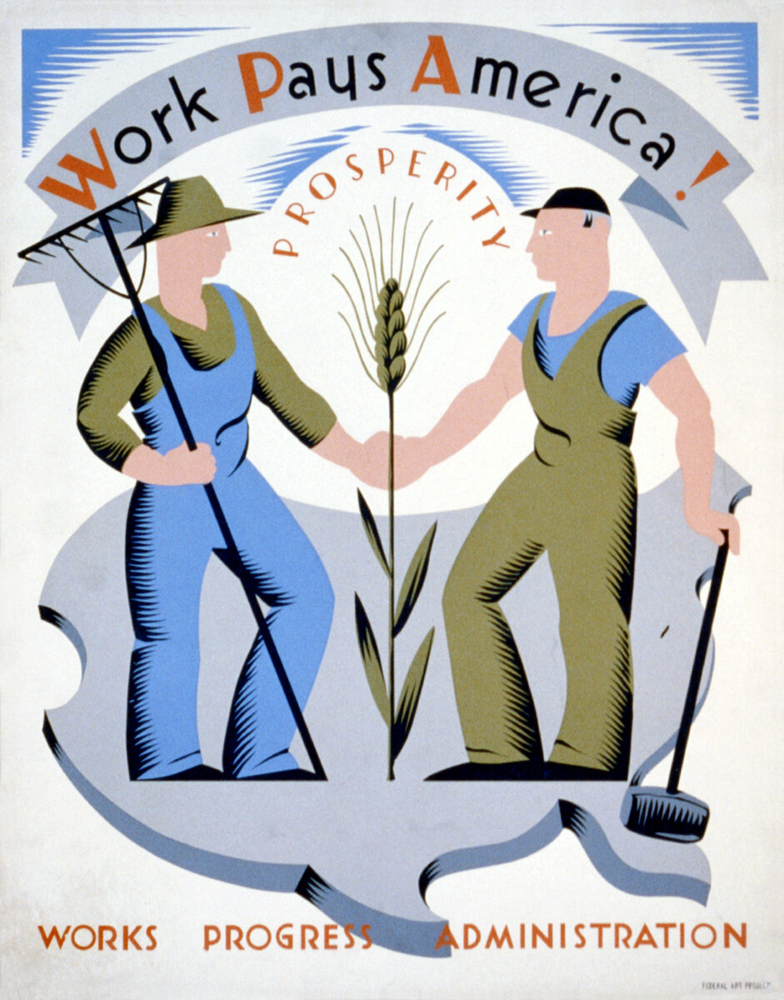

B2 · American History
Franklin D. Roosevelt and the New Deal
He closed every bank in the country on his fourth day in office, and most people thanked him for it.
Play the audio and follow along, then read it again on your own. Tap or hover over a highlighted word to see what it means.
Franklin Roosevelt took office on 4 March 1933, at the worst moment of the Depression. Banks were failing in dozens of states, a quarter of the workforce had no job, and nobody knew whether the banking system would exist by the end of the month.
Two days later he closed every bank in the country. The idea was to stop the panic by removing the thing people were panicking about: nobody could withdraw money anywhere, so no bank could be brought down by a queue. Inspectors examined the books, and over the following week the sound institutions reopened with a federal guarantee behind them.
On the Sunday before they reopened, Roosevelt explained the plan on the radio for about thirteen minutes, in ordinary language, as though to a neighbor. When the banks opened, deposits exceeded withdrawals. The radio talks continued for twelve years and became known as the fireside chats.
What followed in the first hundred days was a volume of legislation without precedent. The programs were known by their initials, which is why the period is sometimes called the alphabet soup.
The Civilian Conservation Corps put three million young men to work planting trees, fighting fires and building parks, and sent most of their pay home to their families. The Works Progress Administration employed eight and a half million people over its life and built roughly 650,000 miles of road, plus schools, bridges, airports — and, deliberately, murals, plays, concerts and a national guide to every state, on the argument that artists also eat.

The Tennessee Valley Authority brought flood control and electricity to one of the poorest regions in the country. The Securities and Exchange Commission put rules around the stock market. Federal deposit insurance guaranteed savings. The Social Security Act of 1935 created old-age pensions and unemployment insurance, the first time the federal government had taken responsibility for either.
The Supreme Court struck down several of the early programs as unconstitutional, and Roosevelt responded in 1937 with a plan to add justices to the court. It was the worst political defeat of his career: Congress refused, his own party split, and the episode cost him support he never fully recovered.
The limits of the New Deal matter as much as its scale. To pass the legislation at all, Roosevelt needed southern Democrats in Congress, and the price they set was the exclusion of agricultural and domestic workers from Social Security — which, not by accident, excluded about two-thirds of Black workers. Many programs operated segregated facilities. The New Deal reshaped American life while leaving the racial order of the south largely untouched.
Economists still argue about the results. Unemployment fell from about twenty-five per cent to around fourteen, which is enormous and still terrible, and the spending cuts of 1937 pushed it back up. What is not in dispute is the institutional change: after 1933 the federal government was expected to manage the economy, support the old, insure the unemployed and regulate the markets.
Roosevelt was elected four times, the only president ever to be, and died in office in April 1945, weeks before the end of the war in Europe. The two-term limit was written into the Constitution four years later, which is itself a measure of how much one presidency had changed.
Key Vocabulary
- to take office to begin an official position, especially as a leader
- a bank holiday here: an official closure of the banks
- sound here: financially safe and reliable
- legislation laws, considered as a body of work
- without precedent never done before
- a mural a painting made directly on a wall
- to strike down (of a court) to cancel a law as invalid
- unconstitutional not allowed by the constitution
- exclusion the act of leaving somebody out of a system or benefit
- a term limit a legal cap on how long one person may hold an office
- support backing, people on your side — careful: not the ability to put up with something
Franklin D. Roosevelt and the New Deal — B2 · American History · Renan the Teacher, English Language Academy · https://renangrossi.github.io/englishclasses/reading/b2/fdr-new-deal.html
Interactive Exercises
Practice
Complete each exercise, then click Submit to see your score and an explanation for every answer.
Speaking & Writing
Discussion
There are no right answers here — use these to practice speaking, or write a short answer to each.
- Roosevelt explained his bank plan on the radio in ordinary language, and it worked. How much of government is explanation?
- The New Deal was passed at the price of excluding most Black workers from it. How should that compromise be judged now?
- Should a government create jobs directly in a crisis, or is that work better left to companies?